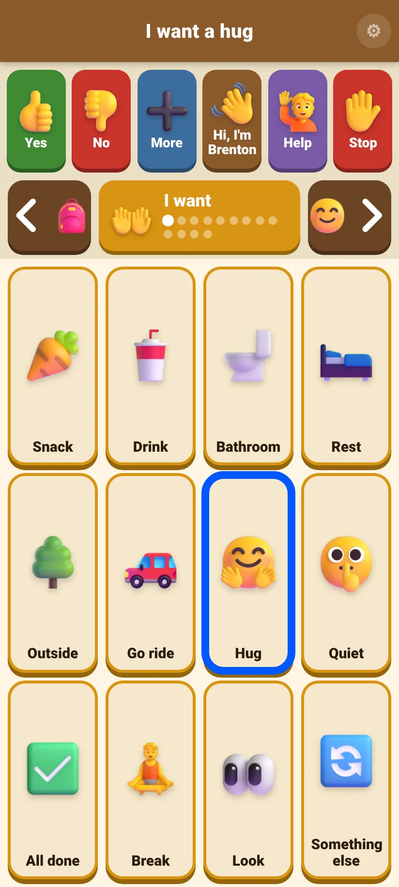
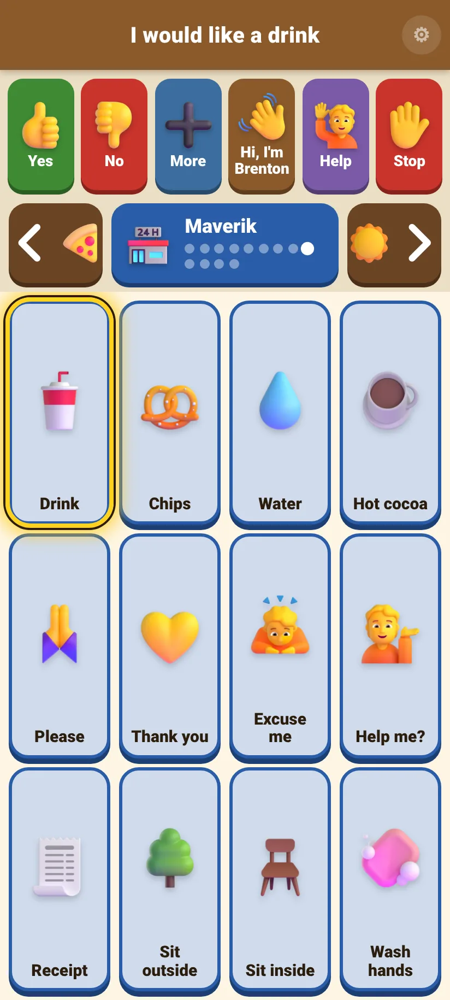
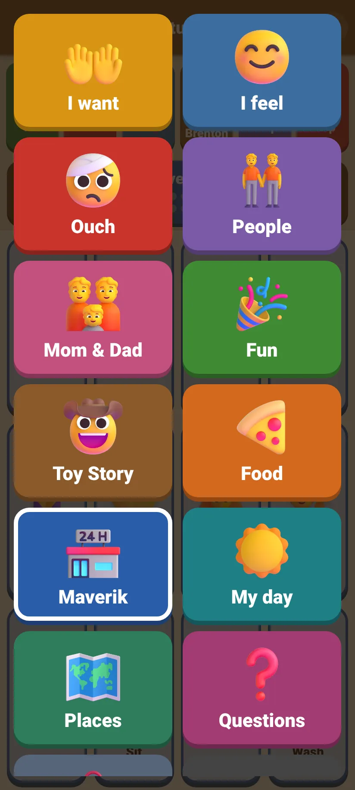
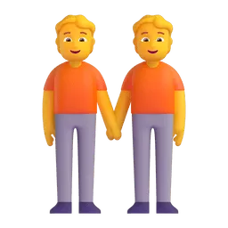
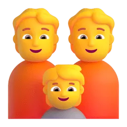
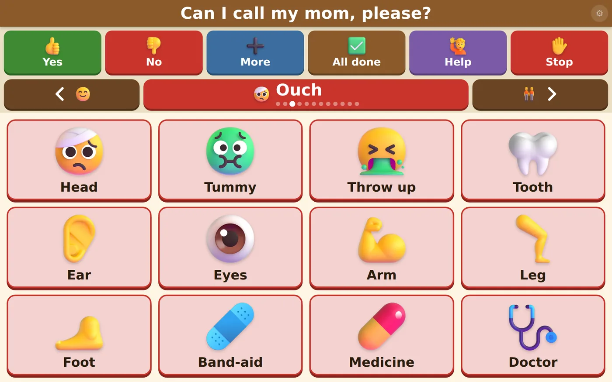
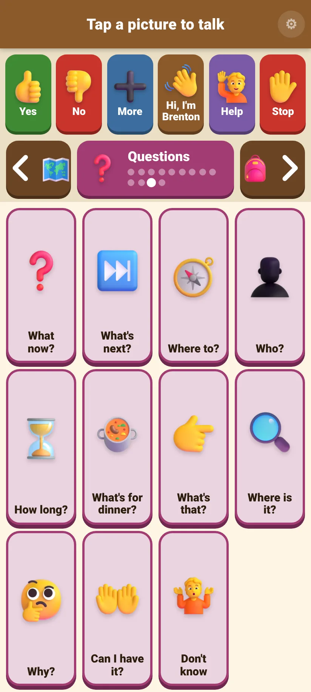
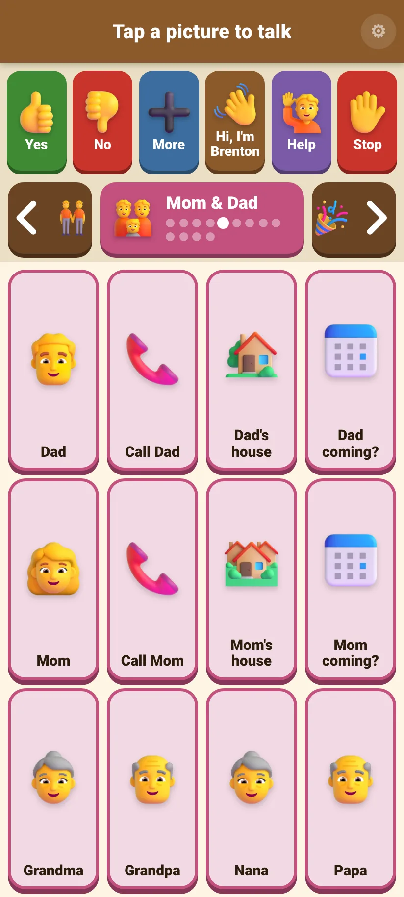
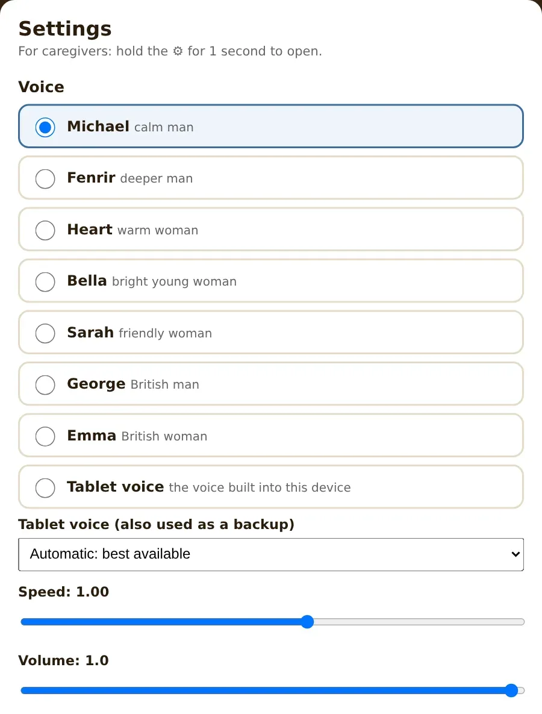
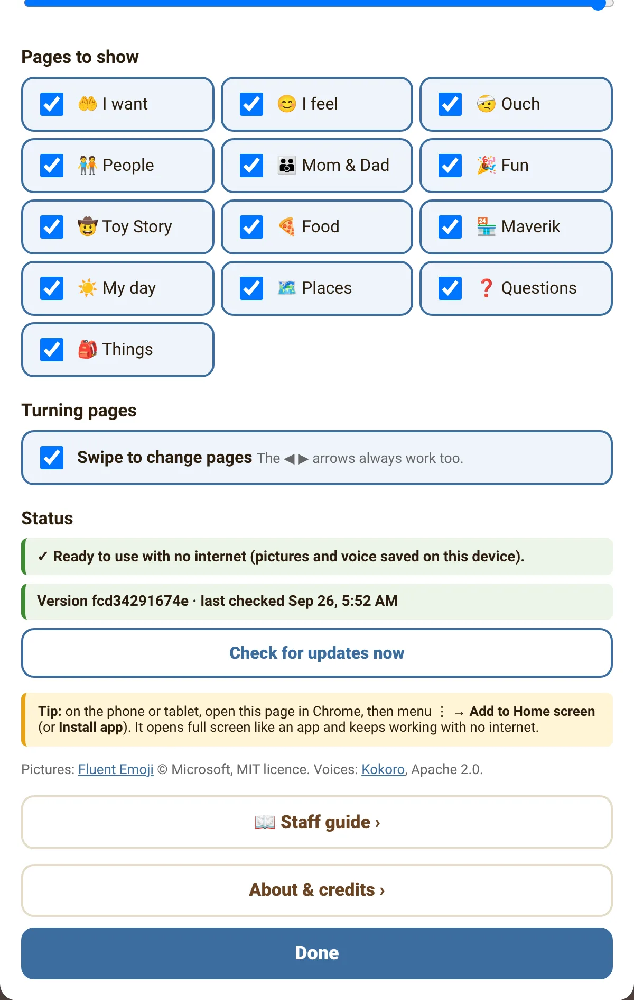

Talanoa
Staff Guide
tah-lah-NOH-ah · Tongan for talking together
A picture board that speaks. A resident taps a picture and the tablet says the words out loud.
For staff and families at Faleofaz1What Talanoa is
Talanoa helps a person who can't speak tell you what they want, how they feel, and who they want to see.
It works like a set of talking picture cards on a tablet. Every picture says a short sentence out loud in a natural voice, for example the cookie picture says "I want a snack." The words also appear in big letters at the top, so you can read them from across the room.
There are 12 pages with 140 pictures in total, plus six important buttons that are always on screen.
- It never stays silent. If a voice recording can't play, the tablet's own voice says it instead.
- The top row never moves. Yes, No, More, All done, Help and Stop are always in the same place, so they can be found without looking.
- It works without internet once it has been set up.
2Setting up a tablet
You only do this once per tablet. It takes about two minutes and needs Wi-Fi.
- 1Open Google Chrome
Use Chrome, not a preview from email or Google Drive.
- 2Go to the Talanoa address
Scan the QR code on the front of this guide with the tablet camera, or type tcdeveloper27.github.io/Talanoa (capital T in Talanoa).
- 3Tap the ⋮ menu (three dots, top right)
Choose Add to Home screen or Install app, then confirm.
- 4Open Talanoa from its new icon
It opens full screen like any other app.
- 5Leave it on Wi-Fi for a minute
It saves the pictures and voice onto the tablet. Check in Settings: Status should say ✓ Ready to use with no internet.
Step 3 (illustration). The menu on your tablet may look a little different.
Step 4 (illustration). The Talanoa icon on the home screen.
3The screen at a glance
This is exactly what residents see. The numbers match the list below.

1234567- 1Spoken words. Shows what was just said, in big letters, so staff can read it too. It flashes green on every tap.
- 2The six "always" buttons. On every page, never moving: YesNoMoreAll doneHelpStop
- 3Back arrow ◀. Goes to the previous page. The small picture shows which page it goes to.
- 4Page name. Shows which page you're on; the dots show where you are in the pages. Tap it to see all pages at once.
- 5Next arrow ▶. Goes to the next page. After the last page it goes back to the first.
- 6Picture tiles. 12 per page, always in the same spots. Tap one to speak.
- 7Settings ⚙. For staff only. It opens only when you press and hold it for one second, so residents won't open it by accident.
4Talking with it
Tap a picture once and the tablet says the words.
- 👆One tap = one sentence
No double-tapping or holding needed.
- 🔁Tap again to repeat
It starts again from the beginning.
- ⚡Quick taps are fine
A new tap stops the last sentence and says the new one. Nothing gets stuck.
- 📳A little buzz
The tablet vibrates slightly on each tap, if it can.

Upright, after tapping Hug. The top says "I want a hug".
5Moving between pages
Use the big ◀ ▶ arrows to flip through the pages, like turning the pages of a book.
To jump straight to a page, tap the page name in the middle. All pages appear as big buttons: tap one to go there, or tap ✕ Close.

Tapping the page name shows every page.
The 12 pages, in order

People4
Mom & Dad5
Ouch: point to where it hurts.

Questions: what's next, where, who, how long.
6The Mom & Dad page
All the parent and grandparent tiles are together on one page.

Every Dad tile has the matching Mom tile directly underneath it: Dad and Mom, Call Dad and Call Mom, Dad's house and Mom's house, Dad coming? and Mom coming? The bottom row has Grandma, Grandpa, Nana and Papa.
7Settings
Settings belong to each tablet. Changing them on one tablet doesn't change the others.

ABC- AVoice. Tap a name to choose it. You'll hear "Hi! This is my voice." Choose the one that suits the resident.
- BSpeed. Slide left for slower speech, right for faster. 1.00 is normal.
- CVolume. The app's own loudness. Also check the tablet's side buttons.
The 7 voices
| Voice | Sounds like |
|---|---|
| Michael default | calm man |
| Fenrir | deeper man |
| Heart | warm woman |
| Bella | bright young woman |
| Sarah | friendly woman |
| George | British man |
| Emma | British woman |
| Tablet voice | the voice built into the tablet (sound depends on the tablet) |

DEFG- DPages to show. Untick a page to hide it on this tablet; tick it to bring it back. At least one page always stays on.
- EStatus. "✓ Ready to use with no internet" means everything is saved. Below it you'll see the version and when it last checked for updates.
- FCheck for updates now. Gets the newest version straight away (see section 8).
- GAbout & credits. Who made Talanoa and how to contact Faleofaz.
Tap Done at the bottom to close Settings.
8Updates
You don't have to do anything. New words and fixes arrive by themselves.
- The tablet checks when Talanoa opens, when the screen turns back on, and every 30 minutes.
- It never changes while someone is tapping. It waits until nobody has tapped for 2 minutes, or the screen is off, and then comes back on the same page.
- To update right now: hold ⚙ → Check for updates now. If there's something new, the app restarts by itself with it.
| The message says… | Meaning |
|---|---|
| ✓ You have the latest version. | Nothing to do. |
| Downloading the new version… the app will restart by itself. | Wait a few seconds. |
| A new version is ready and will switch on when the board is not in use. | It will update on its own soon. |
| Could not check: no internet connection right now. | Connect to Wi-Fi and try again. The board still works normally. |
9Without Wi-Fi
Once a tablet shows ✓ Ready to use with no internet, Talanoa works anywhere: on outings, in the car, or when the Wi-Fi is down. Pictures, words and the chosen voice are all saved on the tablet.
10Tips for helping residents
A talking board works best when the people around it use it too.
- 🗣️Show, don't test
While you talk, tap the pictures yourself ("Let's have lunch", tapping Lunch). This is how people learn where things are. Never quiz them.
- ⏳Give time
Wait after asking a question. Finding the right picture can take a while.
- 💬Every tap counts
Answer what was said, even if you think it was an accident. That's how they learn their words have power.
- 📍Keep it close and charged
The board only helps if it's within reach, all day, in every room.
- 🤝Tell the family
Let the family know which pictures get used, and which words are missing.
11If something goes wrong
| What you notice | What to do |
|---|---|
| No sound at all | Turn the tablet volume up with its side buttons. Check the tablet isn't on silent. In Settings, check Volume isn't low. |
| The voice sounds robotic | In Settings, Tablet voice is probably chosen. Choose Michael (or another named voice). |
| Only a brown bar, no pictures | It was opened in a preview (from email or Google Drive). Open Talanoa from its home-screen icon, or in Chrome. |
| A page is missing | Settings → Pages to show → tick it. |
| Settings won't open | Press and hold the ⚙ for a full second. A quick tap does nothing, on purpose. |
| New words from the family aren't showing | Connect to Wi-Fi, then Settings → Check for updates now. |
| "404 / There isn't a GitHub Pages site here" | The address was typed wrong. Use the QR code, or type tcdeveloper27.github.io/Talanoa with a capital T. |
| The ▶ arrow jumped back to "I want" | That's normal: after the last page it starts again at the first. |
| The screen keeps turning off | See "Screen timeout" in section 12. |
| Something else looks wrong | Close Talanoa completely and open it again from its icon. If it still happens, take a photo of the screen and send it to the family. |
12Looking after the tablet
- 🔋Charge every night
A flat tablet means a resident with no voice.
- ⏲️Screen timeout
On most Android tablets: Settings → Display → Screen timeout, and choose a longer time (for example 10 minutes).
- 🔊Volume
Use the side buttons while Talanoa is talking to set how loud it is.
- 🧽Clean and protect
Wipe the screen with a slightly damp cloth. A sturdy case is a good idea.
13Asking for changes
New words, different wording, a real photo of someone instead of a picture: the family can add these. Write down what's needed (for example "add Swing, 'I want to go on the swing'") and pass it to Tim Broussard. The change reaches every tablet automatically, usually the same day.
14Credits & contact
Talanoa was made with love by:
Pictures: Fluent Emoji © Microsoft (MIT licence). Voices recorded with Kokoro, an open-source speech model (Apache 2.0).